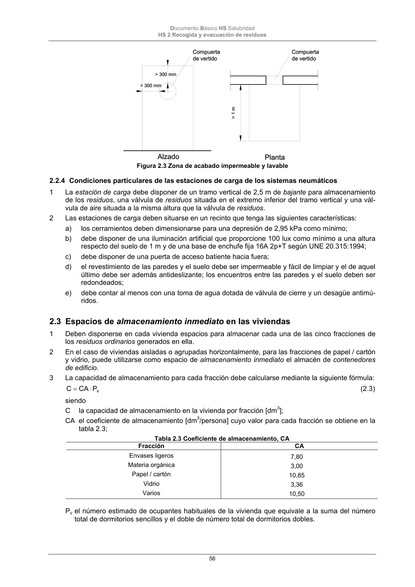

DB-HS · 2.3 Espacios de almacenamiento inmediato en las viviendas · versión 2022-06-14 · capa oficial
Formatos: JSON compacto · Markdown · PDF fuente
Ámbito del documento · texto del ámbito · documento y tablas
ID técnico a0134 · PDF pág. 56-57 · jerarquía no validada por persona · contrastado con el literal de la página 56 (candidato tipográfico); no validado por persona · padre: raíz
2.3 Espacios de almacenamiento inmediato en las viviendas 1 Deben disponerse en cada vivienda espacios para almacenar cada una de las cinco fracciones de los residuos ordinarios generados en ella. 2 En el caso de viviendas aisladas o agrupadas horizontalmente, para las fracciones de papel / cartón y vidrio, puede utilizarse como espacio de almacenamiento inmediato el almacén de contenedores de edificio. 3 La capacidad de almacenamiento para cada fracción debe calcularse mediante la siguiente fórmula: v P CA C (2.3) siendo C la capacidad de almacenamiento en la vivienda por fracción [dm3]; CA el coeficiente de almacenamiento [dm3/persona] cuyo valor para cada fracción se obtiene en la tabla 2.3; Tabla 2.3 Coeficiente de almacenamiento, CA Fracción CA Envases ligeros Materia orgánica Papel / cartón Vidrio Varios 7,80 3,00 10,85 3,36 10,50 Pv el número estimado de ocupantes habituales de la vivienda que equivale a la suma del número total de dormitorios sencillos y el doble de número total de dormitorios dobles. Documento Básico HS Salubridad HS 2 Recogida y evacuación de residuos 57 4 Con independencia de lo anteriormente expuesto, el espacio de almacenamiento de cada fracción debe tener una superficie en planta no menor que 30x30 cm y debe ser igual o mayor que 45 dm3. 5 Los espacios destinados a materia orgánica y envases ligeros deben disponerse en la cocina o en zonas anejas auxiliares. 6 Estos espacios deben disponerse de tal forma que el acceso a ellos pueda realizarse sin que haya necesidad de recurrir a elementos auxiliares y que el punto más alto esté situado a una altura no mayor que 1,20 m por encima del nivel del suelo. 7 El acabado de la superficie de cualquier elemento que esté situado a menos de 30 cm de los límites del espacio de almacenamiento debe ser impermeable y fácilmente lavable.

PDF fuente redistribuible: copia fiel enlazada en esta página (SHA256 verificado).